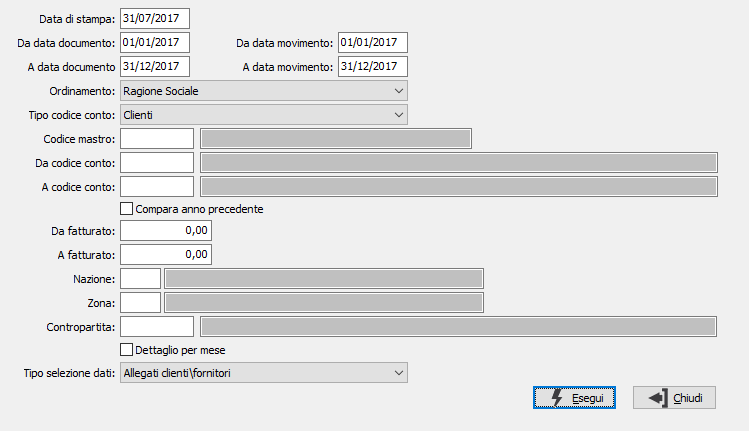

Stampa fatturato contabile
La procedura permette di ottenere l’analisi del fatturato basandosi solo sui movimenti di prima nota contabile e quindi utilizzabile da tutte quelle aziende che registrano i movimenti di vendita in prima nota contabile pur non inserendo le fatture.

DATA DI STAMPA: indicare la data in cui viene effettuata la stampa (viene proposta la data di sistema, modificabile).
DA DATA DOCUMENTO: indicare la data riferita al documento da cui si desidera iniziare la stampa. Viene proposta la data di inizio esercizio corrente.
A DATA DOCUMENTO: indicare la data riferita al documento con cui si desidera terminare la stampa. Viene proposta la data di fine esercizio corrente.
DA DATA MOVIMENTO: indicare la data riferita al movimento da cui si desidera iniziare la stampa. Viene proposta la data di inizio esercizio corrente.
A DATA MOVIMENTO: indicare la data riferita al movimento con cui si desidera terminare la stampa. Viene proposta la data di fine esercizio corrente.
ORDINAMENTO: definisce il criterio di ordinamento in stampa: codice conto, ragione sociale o fatturato.
TIPO CODICE CONTO: specifica la tipologia dei conti da considerare: clienti o fornitori.
CODICE MASTRO: codice del mastro a cui si vuole limitare la stampa. Sul campo sono attive le funzioni di ricerca (F9).
DA CODICE CONTO: codice del conto, relativo al tipo e mastro inserito, con cui iniziare la stampa. Sul campo sono attive le funzioni di ricerca (F9).
A CODICE CONTO: codice del conto, relativo al tipo e mastro inserito, con cui terminare la stampa. Sul campo sono attive le funzioni di ricerca (F9).
COMPARA ANNO PRECEDENTE: definisce se deve essere effettuata la stampa dei dati relativi all'anno precedente con la differenza in valore e percentuale (casella con segno di spunta).
DA FATTURATO: definisce il valore dl fatturato minimo da riportare in stampa; valori inferiori non saranno considerati.
A FATTURATO: definisce il valore dl fatturato massimo da riportare in stampa; valori superiori non saranno considerati; non viene tenuto conto del parametro se uguale a zero.
NAZIONE: codice della nazione a cui si vuole limitare la stampa. Sul campo sono attive le funzioni di ricerca (F9).
CONTROPARTITA: codice della contropartita a cui si vuole limitare la stampa. Sul campo sono attive le funzioni di ricerca (F9).
DETTAGLIO PER MESE: se spuntato consenti di riportare i valori per mese.
TIPO SELEZIONE DATI: Valori possibili:
Tutti: legge tutti i movimenti Iva;
Allegati clienti/fornitori: consente di selezionare i movimenti Iva in base a quanto previsto sul codice Iva per il campi "Tipo aggiornamento clienti" e "Tipo aggiornamento fornitori" utilizzando solo i movimenti relativi ad aliquote che hanno valori diversi da "Nessuna operazione" su uno dei due campi.
Registro Iva: come il precedente, ma vengono considerati tutti i movimenti che comunque hanno il flag di stampa su registro attivo.